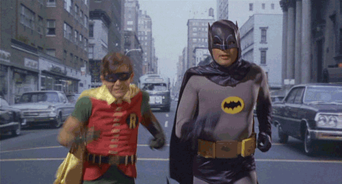

smashing conf 2017 🇪🇸
🥓 ☀️ ⛵️ 🍷
Brad Frost
Design systems + How we work + Design tokensBasically, make a design system and it will promote:
- UI consistency and cohesion
- Faster time to production
- Shared vocabulary
- Easier testing
- Useful referencing
- Future-friendly foundation
Brads top tips
- (Dev) To avoid task ambiguity - make everyone do a codepen in planning.
- (Design) Use Sketch libraries let you share symbols accross documents
- Use design tokens...
Design Token Properties
- Background colours
- Border thinkness
- Font sizes etc
Design tokens in CSS
// design-tokens.css
:root {
--primary-heading: 24px;
}@import "design-tokens.css";
h1 {
font-size: var(--primary-heading);
}Design system + Design tokens

Sarah Drasner
Cheating UXFirstly: Why are mirrors in lifts?

- Claustrophobia
- Boredom
Why do we animate?
The attention span of a user is only 2 seconds...
Amazon
"For every one second delay, conversions dropped by 7%. If you sell $100k per day, that’s an annual loss of $2.5m."
Wallmart
"Gains 1% revenue increase for every 100ms of improvement. 💵"
Ericsson
"Anything loading over 4 seconds: HORROR 😱"
Perceived Perf Wins 🚀
Humans over-estimate passive waits by 36%
Novel waiting experiences make people wait longer
Don't use a loading spinner

Use a branded loading animation

How can you make something to animate?
- Get an SVG
- Has to have a stroke, dash offset, maybe dasharray
- Animate dash offset with keyframes
.path {
stroke-dasharray: 1000;
stroke-dashoffset: 1000;
animation: dash 5s linear forwards;
}
@keyframes dash {
to {
stroke-dashoffset: 0;
}
}
Lots of short animations are perceived as long
... but one long animation becomes shorter.

Younger audiences are more demanding
🙇and will not wait as long as
👴🏻
Calm users wait longer

Trust your APIs
Provide optimimistic, instant feeback to the user (where appropriate 👀)
Ideal Interface Response Guide
| DURATION ⏱ | ACTION 🏃 |
|---|---|
| 0 - 300ms | Provide Instant UI feedback |
| 300ms - 1 second | Delay is tolerable - do nothing |
| 2 - 5 seconds | Display loading animation |
Tyler Sticka
Don't use icon fonts
When they fail they expose
the unicode they were mapped to
Which can fail too
or display something completely unexpected...
⭐️️️️️️️️️⭐️⭐️️️️️️️️️⭐️🐴
Use SVGs
Monica Dinculescu
Fontastic Web PerformanceTop tips
- 🐞 Don't use / limit web fonts
- 🐝 Use .woff2 font files
- 🐐 Use a font-display strategy
- 🐕 Preload the font
- 🦍 Only use the character range you need
- 🦏 Use font face observer for more control